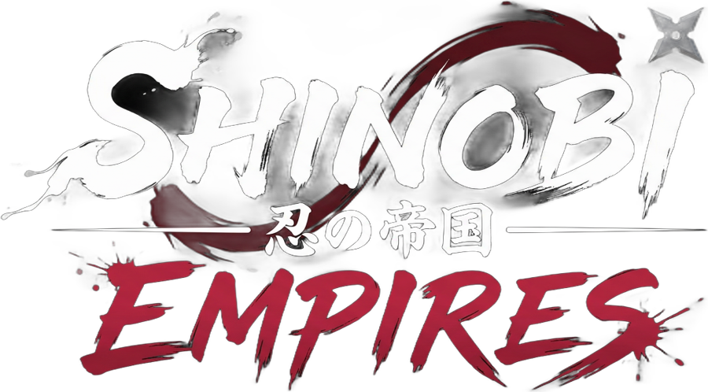
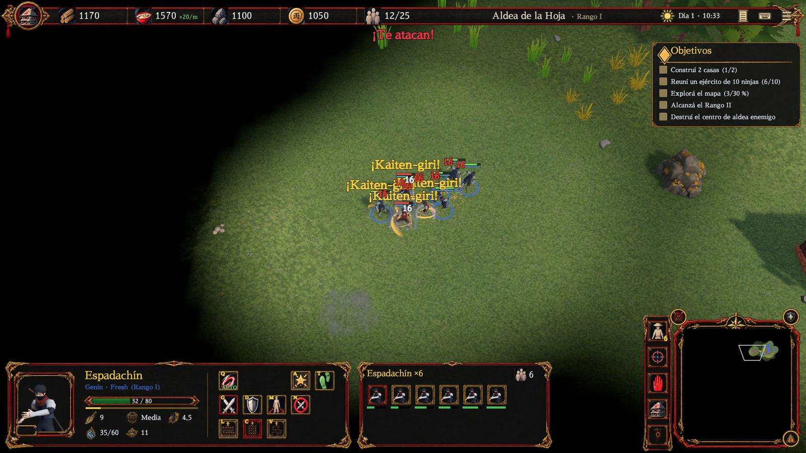
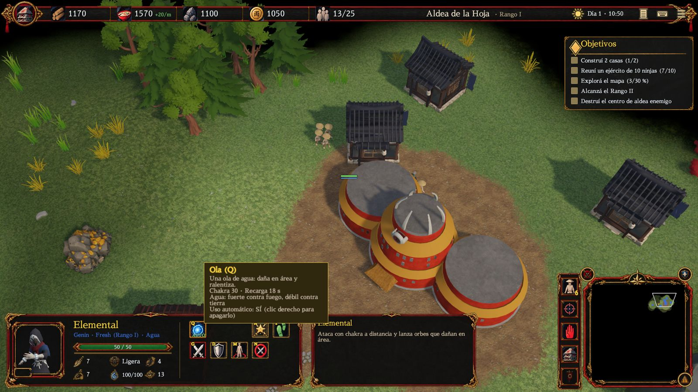

Tu aldea crece contigo
Decidí qué recolectar, dónde expandirte y cuándo subir de rango de aldea.

Levantá tu aldea. Entrená a tus ninjas. Defendé tu clan.
Estrategia en tiempo real en 3D low-poly: recolectá recursos, construí, subí de rango y llevá un ejército pequeño donde cada técnica de chakra puede dar vuelta una pelea. Solo contra la IA o con un aliado por Internet.
Economía y construcción como en los grandes juegos de estrategia, mezcladas con unidades ninja que usan técnicas de chakra. Cuatro ideas guían todo el diseño.
Decidí qué recolectar, dónde expandirte y cuándo subir de rango de aldea.
Ejércitos medianos donde una técnica bien usada cambia el resultado.
El cooperativo es un modo de primera clase: cada uno con su aldea, aliados contra la IA.
Afiliate a 2 o 3 clanes de tu aldea. Cada uno desbloquea unidades, técnicas y bonos propios.

Cada ninja tiene su barra de chakra debajo de la vida. Las técnicas gastan ese chakra y tienen recarga: las activás vos o dejás que tus tropas las usen solas cuando conviene.

Elegí dónde construir, mandá más aldeanos para terminar antes y subí el rango de tu aldea para desbloquear edificios y unidades nuevas.
Investigá rangos en el cuartel o el campo de tiro y mejorá a toda la línea de unidades a la vez. Aparte, cada ninja gana veteranía peleando, y la pierde si cae.
Ropa shinobi sencilla y equipo básico. Así empieza cada línea.
Más vida, daño y chakra máximo. Chaleco y protecciones visibles en el modelo.
Silueta imponente y una segunda técnica desbloqueada.
Imágenes reales de la versión en desarrollo. Tocá una para verla grande.
Sin Internet ni cuenta. La IA juega con las mismas reglas y órdenes que vos, sin trampas.
Cada uno con su aldea, aliados contra la IA. Por Internet con un código de 6 caracteres o por IP directa. Recursos separados o compartidos.
Una historia para jugar solo o en cooperativo. El PvP llegará después.
Guardado local con autoguardado cada 3 minutos. En cooperativo guarda el anfitrión y los dos siguen la partida al volver a conectarse.
| Seleccionar | Clic izquierdo · arrastrar para caja · Shift suma o quita · doble clic elige todos los del mismo tipo |
|---|---|
| Mover y atacar | Clic derecho en el suelo o sobre un enemigo |
| Recolectar | Con aldeanos, clic derecho en un árbol, roca o arbusto de bayas |
| Técnicas | Q W E R o clic en el botón · clic derecho en el botón = uso automático |
| Construir | Aldeanos → botón del edificio → clic en el suelo (verde = se puede) · Shift para varios |
| Cámara | WASD o flechas · rueda = zoom · Q/E o botón central = rotar |
| Menú | F10 para guardar, cargar u opciones · Esc cancela o deselecciona |
En Windows 10 u 11. Es un juego para PC con mouse y teclado.
No para jugar solo: el modo individual funciona completamente offline, sin cuenta. Internet solo hace falta para el cooperativo por código.
El anfitrión elige Cooperativo → Crear por Internet y le pasa el código de partida. El invitado lo escribe y se une. Los dos tienen que tener la misma versión del juego.
No. Está en desarrollo activo: el arte, las unidades y los clanes siguen creciendo con cada versión.
Gratis para Windows 10 y 11. Bajá el ZIP, descomprimilo en una carpeta y abrí ShinobiEmpires.exe. Para jugar en cooperativo, los dos tienen que tener la misma versión.
Descargar para WindowsSi Windows muestra «Windows protegió tu PC», tocá Más información → Ejecutar de todas formas. Pasa con juegos chicos que no están firmados.